This library contains the different components of the r3 robot. Usually, there is no need to use this library directly.
Extends from Modelica.Icons.Package (Icon for standard packages).
| Name | Description |
|---|---|
| Data bus for one robot axis | |
| Data bus for all axes of robot | |
| Generate reference angles for fastest kinematic movement | |
| Generate reference angles for fastest kinematic movement | |
| 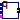 PathToAxisControlBus | Map path planning to one axis control bus |
| GearType1 | Motor inertia and gearbox model for r3 joints 1,2,3 |
| GearType2 | Motor inertia and gearbox model for r3 joints 4,5,6 |
| Motor | Motor model including current controller of r3 motors |
| Controller | P-PI cascade controller for one axis |
| AxisType1 | Axis model of the r3 joints 1,2,3 |
| AxisType2 | Axis model of the r3 joints 4,5,6 |
| 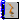 MechanicalStructure | Model of the mechanical part of the r3 robot (without animation) |
 Modelica.Mechanics.MultiBody.Examples.Systems.RobotR3.Components.AxisControlBus
Modelica.Mechanics.MultiBody.Examples.Systems.RobotR3.Components.AxisControlBus
Signal bus that is used to communicate all signals for one axis. This is an expandable connector which has a "default" set of signals. Note, the input/output causalities of the signals are determined from the connections to this bus.
Extends from Modelica.Icons.SignalSubBus (Icon for signal sub-bus).
| Type | Name | Description |
|---|---|---|
| Boolean | motion_ref | = true, if reference motion is not in rest |
| Angle | angle_ref | Reference angle of axis flange [rad] |
| Angle | angle | Angle of axis flange [rad] |
| AngularVelocity | speed_ref | Reference speed of axis flange [rad/s] |
| AngularVelocity | speed | Speed of axis flange [rad/s] |
| AngularAcceleration | acceleration_ref | Reference acceleration of axis flange [rad/s2] |
| AngularAcceleration | acceleration | Acceleration of axis flange [rad/s2] |
| Current | current_ref | Reference current of motor [A] |
| Current | current | Current of motor [A] |
| Angle | motorAngle | Angle of motor flange [rad] |
| AngularVelocity | motorSpeed | Speed of motor flange [rad/s] |
expandable connector AxisControlBus "Data bus for one robot axis"
extends Modelica.Icons.SignalSubBus;
import SI = Modelica.SIunits;
Boolean motion_ref "= true, if reference motion is not in rest";
SI.Angle angle_ref "Reference angle of axis flange";
SI.Angle angle "Angle of axis flange";
SI.AngularVelocity speed_ref "Reference speed of axis flange";
SI.AngularVelocity speed "Speed of axis flange";
SI.AngularAcceleration acceleration_ref
"Reference acceleration of axis flange";
SI.AngularAcceleration acceleration "Acceleration of axis flange";
SI.Current current_ref "Reference current of motor";
SI.Current current "Current of motor";
SI.Angle motorAngle "Angle of motor flange";
SI.AngularVelocity motorSpeed "Speed of motor flange";
end AxisControlBus;
Signal bus that is used to communicate all signals of the robot. This is an expandable connector which has a "default" set of signals. Note, the input/output causalities of the signals are determined from the connections to this bus.
Extends from Modelica.Icons.SignalBus (Icon for signal bus).
| Type | Name | Description |
|---|---|---|
| AxisControlBus | axisControlBus1 | Bus of axis 1 |
| AxisControlBus | axisControlBus2 | Bus of axis 2 |
| AxisControlBus | axisControlBus3 | Bus of axis 3 |
| AxisControlBus | axisControlBus4 | Bus of axis 4 |
| AxisControlBus | axisControlBus5 | Bus of axis 5 |
| AxisControlBus | axisControlBus6 | Bus of axis 6 |
expandable connector ControlBus "Data bus for all axes of robot"
extends Modelica.Icons.SignalBus;
Modelica.Mechanics.MultiBody.Examples.Systems.RobotR3.Components.AxisControlBus
axisControlBus1 "Bus of axis 1";
Modelica.Mechanics.MultiBody.Examples.Systems.RobotR3.Components.AxisControlBus
axisControlBus2 "Bus of axis 2";
Modelica.Mechanics.MultiBody.Examples.Systems.RobotR3.Components.AxisControlBus
axisControlBus3 "Bus of axis 3";
Modelica.Mechanics.MultiBody.Examples.Systems.RobotR3.Components.AxisControlBus
axisControlBus4 "Bus of axis 4";
Modelica.Mechanics.MultiBody.Examples.Systems.RobotR3.Components.AxisControlBus
axisControlBus5 "Bus of axis 5";
Modelica.Mechanics.MultiBody.Examples.Systems.RobotR3.Components.AxisControlBus
axisControlBus6 "Bus of axis 6";
end ControlBus;
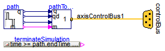
Given
this component computes the fastest movement under the given constraints. This means, that:
The acceleration, constant velocity and deceleration phase are determined in such a way that the movement starts form the start angles and ends at the end angles. The output of this block are the computed angles, angular velocities and angular acceleration and this information is stored as reference motion on the controlBus of the r3 robot.
| Type | Name | Default | Description |
|---|---|---|---|
| Real | angleBegDeg | 0 | Start angle [deg] |
| Real | angleEndDeg | 1 | End angle [deg] |
| AngularVelocity | speedMax | 3 | Maximum axis speed [rad/s] |
| AngularAcceleration | accMax | 2.5 | Maximum axis acceleration [rad/s2] |
| Time | startTime | 0 | Start time of movement [s] |
| Time | swingTime | 0.5 | Additional time after reference motion is in rest before simulation is stopped [s] |
| Type | Name | Description |
|---|---|---|
| ControlBus | controlBus |
model PathPlanning1
"Generate reference angles for fastest kinematic movement"
import SI = Modelica.SIunits;
import Cv = Modelica.SIunits.Conversions;
parameter Real angleBegDeg(unit="deg") = 0 "Start angle";
parameter Real angleEndDeg(unit="deg") = 1 "End angle";
parameter SI.AngularVelocity speedMax = 3 "Maximum axis speed";
parameter SI.AngularAcceleration accMax = 2.5 "Maximum axis acceleration";
parameter SI.Time startTime=0 "Start time of movement";
parameter SI.Time swingTime=0.5
"Additional time after reference motion is in rest before simulation is stopped";
final parameter SI.Angle angleBeg=Cv.from_deg(angleBegDeg) "Start angles";
final parameter SI.Angle angleEnd=Cv.from_deg(angleEndDeg) "End angles";
ControlBus controlBus;
Modelica.Blocks.Sources.KinematicPTP2 path(
q_end={angleEnd},
qd_max={speedMax},
qdd_max={accMax},
startTime=startTime,
q_begin={angleBeg});
PathToAxisControlBus pathToAxis1(final nAxis=1, final axisUsed=1);
Blocks.Logical.TerminateSimulation terminateSimulation(condition=time >= path.endTime
+ swingTime);
equation
connect(path.q, pathToAxis1.q);
connect(path.qd, pathToAxis1.qd);
connect(path.qdd, pathToAxis1.qdd);
connect(path.moving, pathToAxis1.moving);
connect(pathToAxis1.axisControlBus, controlBus.axisControlBus1);
end PathPlanning1;
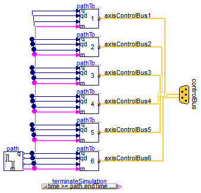
Given
this component computes the fastest movement under the given constraints. This means, that:
The acceleration, constant velocity and deceleration phase are determined in such a way that the movement starts form the start angles and ends at the end angles. The output of this block are the computed angles, angular velocities and angular acceleration and this information is stored as reference motion on the controlBus of the r3 robot.
| Type | Name | Default | Description |
|---|---|---|---|
| Integer | naxis | 6 | number of driven axis |
| Real | angleBegDeg[naxis] | zeros(naxis) | Start angles [deg] |
| Real | angleEndDeg[naxis] | ones(naxis) | End angles [deg] |
| AngularVelocity | speedMax[naxis] | fill(3, naxis) | Maximum axis speed [rad/s] |
| AngularAcceleration | accMax[naxis] | fill(2.5, naxis) | Maximum axis acceleration [rad/s2] |
| Time | startTime | 0 | Start time of movement [s] |
| Time | swingTime | 0.5 | Additional time after reference motion is in rest before simulation is stopped [s] |
| Type | Name | Description |
|---|---|---|
| ControlBus | controlBus |
model PathPlanning6
"Generate reference angles for fastest kinematic movement"
import SI = Modelica.SIunits;
import Cv = Modelica.SIunits.Conversions;
parameter Integer naxis=6 "number of driven axis";
parameter Real angleBegDeg[naxis](unit="deg") = zeros(naxis) "Start angles";
parameter Real angleEndDeg[naxis](unit="deg") = ones(naxis) "End angles";
parameter SI.AngularVelocity speedMax[naxis]=fill(3, naxis)
"Maximum axis speed";
parameter SI.AngularAcceleration accMax[naxis]=fill(2.5, naxis)
"Maximum axis acceleration";
parameter SI.Time startTime=0 "Start time of movement";
parameter SI.Time swingTime=0.5
"Additional time after reference motion is in rest before simulation is stopped";
final parameter SI.Angle angleBeg[:]=Cv.from_deg(angleBegDeg) "Start angles";
final parameter SI.Angle angleEnd[:]=Cv.from_deg(angleEndDeg) "End angles";
ControlBus controlBus;
Modelica.Blocks.Sources.KinematicPTP2 path(
q_end=angleEnd,
qd_max=speedMax,
qdd_max=accMax,
startTime=startTime,
q_begin=angleBeg);
PathToAxisControlBus pathToAxis1(nAxis=naxis, axisUsed=1);
PathToAxisControlBus pathToAxis2(nAxis=naxis, axisUsed=2);
PathToAxisControlBus pathToAxis3(nAxis=naxis, axisUsed=3);
PathToAxisControlBus pathToAxis4(nAxis=naxis, axisUsed=4);
PathToAxisControlBus pathToAxis5(nAxis=naxis, axisUsed=5);
PathToAxisControlBus pathToAxis6(nAxis=naxis, axisUsed=6);
Blocks.Logical.TerminateSimulation terminateSimulation(condition=time >= path.endTime
+ swingTime);
equation
connect(path.q, pathToAxis1.q);
connect(path.qd, pathToAxis1.qd);
connect(path.qdd, pathToAxis1.qdd);
connect(path.moving, pathToAxis1.moving);
connect(path.q, pathToAxis2.q);
connect(path.qd, pathToAxis2.qd);
connect(path.qdd, pathToAxis2.qdd);
connect(path.moving, pathToAxis2.moving);
connect(path.q, pathToAxis3.q);
connect(path.qd, pathToAxis3.qd);
connect(path.qdd, pathToAxis3.qdd);
connect(path.moving, pathToAxis3.moving);
connect(path.q, pathToAxis4.q);
connect(path.qd, pathToAxis4.qd);
connect(path.qdd, pathToAxis4.qdd);
connect(path.moving, pathToAxis4.moving);
connect(path.q, pathToAxis5.q);
connect(path.qd, pathToAxis5.qd);
connect(path.qdd, pathToAxis5.qdd);
connect(path.moving, pathToAxis5.moving);
connect(path.q, pathToAxis6.q);
connect(path.qd, pathToAxis6.qd);
connect(path.qdd, pathToAxis6.qdd);
connect(path.moving, pathToAxis6.moving);
connect(pathToAxis1.axisControlBus, controlBus.axisControlBus1);
connect(pathToAxis2.axisControlBus, controlBus.axisControlBus2);
connect(pathToAxis3.axisControlBus, controlBus.axisControlBus3);
connect(pathToAxis4.axisControlBus, controlBus.axisControlBus4);
connect(pathToAxis5.axisControlBus, controlBus.axisControlBus5);
connect(pathToAxis6.axisControlBus, controlBus.axisControlBus6);
end PathPlanning6;
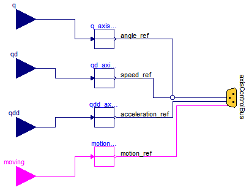
| Type | Name | Default | Description |
|---|---|---|---|
| Integer | nAxis | 6 | Number of driven axis |
| Integer | axisUsed | 1 | Map path planning of axisUsed to axisControlBus |
| Type | Name | Description |
|---|---|---|
| input RealInput | q[nAxis] | |
| input RealInput | qd[nAxis] | |
| input RealInput | qdd[nAxis] | |
| AxisControlBus | axisControlBus | |
| input BooleanInput | moving[nAxis] |
model PathToAxisControlBus
"Map path planning to one axis control bus"
extends Blocks.Interfaces.BlockIcon;
parameter Integer nAxis=6 "Number of driven axis";
parameter Integer axisUsed=1
"Map path planning of axisUsed to axisControlBus";
Blocks.Interfaces.RealInput q[nAxis];
Blocks.Interfaces.RealInput qd[nAxis];
Blocks.Interfaces.RealInput qdd[nAxis];
AxisControlBus axisControlBus;
Blocks.Routing.RealPassThrough q_axisUsed;
Blocks.Routing.RealPassThrough qd_axisUsed;
Blocks.Routing.RealPassThrough qdd_axisUsed;
Blocks.Interfaces.BooleanInput moving[nAxis];
Blocks.Routing.BooleanPassThrough motion_ref_axisUsed;
equation
connect(q_axisUsed.u, q[axisUsed]);
connect(qd_axisUsed.u, qd[axisUsed]);
connect(qdd_axisUsed.u, qdd[axisUsed]);
connect(motion_ref_axisUsed.u, moving[axisUsed]);
connect(motion_ref_axisUsed.y, axisControlBus.motion_ref);
connect(qdd_axisUsed.y, axisControlBus.acceleration_ref);
connect(qd_axisUsed.y, axisControlBus.speed_ref);
connect(q_axisUsed.y, axisControlBus.angle_ref);
end PathToAxisControlBus;
 Modelica.Mechanics.MultiBody.Examples.Systems.RobotR3.Components.GearType1
Modelica.Mechanics.MultiBody.Examples.Systems.RobotR3.Components.GearType1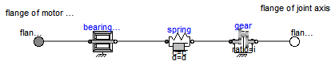
Models the gearbox used in the first three joints with all its effects, like elasticity and friction. Coulomb friction is approximated by a friction element acting at the "motor"-side. In reality, bearing friction should be also incorporated at the driven side of the gearbox. However, this would require considerable more effort for the measurement of the friction parameters. Default values for all parameters are given for joint 1. Model relativeStates is used to define the relative angle and relative angular velocity across the spring (=gear elasticity) as state variables. The reason is, that a default initial value of zero of these states makes always sense. If the absolute angle and the absolute angular velocity of model Jmotor would be used as states, and the load angle (= joint angle of robot) is NOT zero, one has always to ensure that the initial values of the motor angle and of the joint angle are modified correspondingly. Otherwise, the spring has an unrealistic deflection at initial time. Since relative quantities are used as state variables, this simplifies the definition of initial values considerably.
Extends from Modelica.Mechanics.Rotational.Interfaces.PartialTwoFlanges (Partial model for a component with two rotational 1-dim. shaft flanges).
| Type | Name | Default | Description |
|---|---|---|---|
| Real | i | -105 | gear ratio |
| Real | c | 43 | Spring constant [N.m/rad] |
| Real | d | 0.005 | Damper constant [N.m.s/rad] |
| Torque | Rv0 | 0.4 | Viscous friction torque at zero velocity [N.m] |
| Real | Rv1 | (0.13/160) | Viscous friction coefficient (R=Rv0+Rv1*abs(qd)) [N.m.s/rad] |
| Real | peak | 1 | Maximum static friction torque is peak*Rv0 (peak >= 1) |
| Type | Name | Description |
|---|---|---|
| Flange_a | flange_a | Flange of left shaft |
| Flange_b | flange_b | Flange of right shaft |
model GearType1
"Motor inertia and gearbox model for r3 joints 1,2,3 "
extends Modelica.Mechanics.Rotational.Interfaces.PartialTwoFlanges;
parameter Real i=-105 "gear ratio";
parameter Real c(unit="N.m/rad") = 43 "Spring constant";
parameter Real d(unit="N.m.s/rad") = 0.005 "Damper constant";
parameter SI.Torque Rv0=0.4 "Viscous friction torque at zero velocity";
parameter Real Rv1(unit="N.m.s/rad") = (0.13/160)
"Viscous friction coefficient (R=Rv0+Rv1*abs(qd))";
parameter Real peak=1
"Maximum static friction torque is peak*Rv0 (peak >= 1)";
SI.AngularAcceleration a_rel=der(spring.w_rel)
"Relative angular acceleration of spring";
constant SI.AngularVelocity unitAngularVelocity = 1;
constant SI.Torque unitTorque = 1;
Modelica.Mechanics.Rotational.Components.IdealGear gear(
ratio=i, useSupport=false);
Modelica.Mechanics.Rotational.Components.SpringDamper spring(
c=c, d=d);
Modelica.Mechanics.Rotational.Components.BearingFriction bearingFriction(
tau_pos=[0,
Rv0/unitTorque; 1, (Rv0 + Rv1*unitAngularVelocity)/unitTorque],
useSupport=false);
equation
connect(spring.flange_b, gear.flange_a);
connect(bearingFriction.flange_b, spring.flange_a);
connect(gear.flange_b, flange_b);
connect(bearingFriction.flange_a, flange_a);
initial equation
spring.w_rel = 0;
a_rel = 0;
end GearType1;
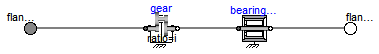
The elasticity and damping in the gearboxes of the outermost three joints of the robot is neglected. Default values for all parameters are given for joint 4.
Extends from Modelica.Mechanics.Rotational.Interfaces.PartialTwoFlanges (Partial model for a component with two rotational 1-dim. shaft flanges).
| Type | Name | Default | Description |
|---|---|---|---|
| Real | i | -99 | Gear ratio |
| Torque | Rv0 | 21.8 | Viscous friction torque at zero velocity [N.m] |
| Real | Rv1 | 9.8 | Viscous friction coefficient in [Nms/rad] (R=Rv0+Rv1*abs(qd)) |
| Real | peak | (26.7/21.8) | Maximum static friction torque is peak*Rv0 (peak >= 1) |
| Type | Name | Description |
|---|---|---|
| Flange_a | flange_a | Flange of left shaft |
| Flange_b | flange_b | Flange of right shaft |
model GearType2
"Motor inertia and gearbox model for r3 joints 4,5,6 "
extends Modelica.Mechanics.Rotational.Interfaces.PartialTwoFlanges;
parameter Real i=-99 "Gear ratio";
parameter SI.Torque Rv0=21.8 "Viscous friction torque at zero velocity";
parameter Real Rv1=9.8
"Viscous friction coefficient in [Nms/rad] (R=Rv0+Rv1*abs(qd))";
parameter Real peak=(26.7/21.8)
"Maximum static friction torque is peak*Rv0 (peak >= 1)";
constant SI.AngularVelocity unitAngularVelocity = 1;
constant SI.Torque unitTorque = 1;
Modelica.Mechanics.Rotational.Components.IdealGear gear(
ratio=i, useSupport=false);
Modelica.Mechanics.Rotational.Components.BearingFriction bearingFriction(
tau_pos=[0,
Rv0/unitTorque; 1, (Rv0 + Rv1*unitAngularVelocity)/unitTorque], peak=peak,
useSupport=false);
equation
connect(gear.flange_b, bearingFriction.flange_a);
connect(bearingFriction.flange_b, flange_b);
connect(gear.flange_a, flange_a);
end GearType2;
 Modelica.Mechanics.MultiBody.Examples.Systems.RobotR3.Components.Motor
Modelica.Mechanics.MultiBody.Examples.Systems.RobotR3.Components.Motor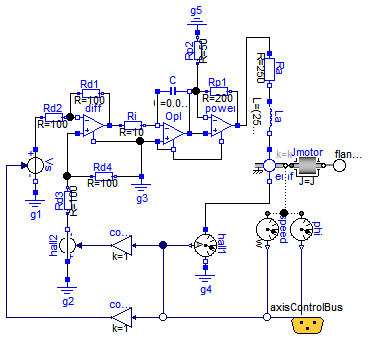
Default values are given for the motor of joint 1. The input of the motor is the desired current (the actual current is proportional to the torque produced by the motor).
Extends from Modelica.Icons.MotorIcon (This icon will be removed in future Modelica versions.).
| Type | Name | Default | Description |
|---|---|---|---|
| Inertia | J | 0.0013 | Moment of inertia of motor [kg.m2] |
| Real | k | 1.1616 | Gain of motor |
| Real | w | 4590 | Time constant of motor |
| Real | D | 0.6 | Damping constant of motor |
| AngularVelocity | w_max | 315 | Maximum speed of motor [rad/s] |
| Current | i_max | 9 | Maximum current of motor [A] |
| Type | Name | Description |
|---|---|---|
| Flange_b | flange_motor | |
| AxisControlBus | axisControlBus |
model Motor "Motor model including current controller of r3 motors " extends Modelica.Icons.MotorIcon; parameter SI.Inertia J(min=0)=0.0013 "Moment of inertia of motor"; parameter Real k=1.1616 "Gain of motor"; parameter Real w=4590 "Time constant of motor"; parameter Real D=0.6 "Damping constant of motor"; parameter SI.AngularVelocity w_max=315 "Maximum speed of motor"; parameter SI.Current i_max=9 "Maximum current of motor";Modelica.Mechanics.Rotational.Interfaces.Flange_b flange_motor; Modelica.Electrical.Analog.Sources.SignalVoltage Vs; Modelica.Electrical.Analog.Ideal.IdealOpAmp diff; Modelica.Electrical.Analog.Ideal.IdealOpAmp power; Electrical.Analog.Basic.EMF emf( k=k, useSupport=false); Modelica.Electrical.Analog.Basic.Inductor La(L=(250/(2*D*w))); Modelica.Electrical.Analog.Basic.Resistor Ra(R=250); Modelica.Electrical.Analog.Basic.Resistor Rd2(R=100); Modelica.Electrical.Analog.Basic.Capacitor C(C=0.004*D/w); Modelica.Electrical.Analog.Ideal.IdealOpAmp OpI; Modelica.Electrical.Analog.Basic.Resistor Rd1(R=100); Modelica.Electrical.Analog.Basic.Resistor Ri(R=10); Modelica.Electrical.Analog.Basic.Resistor Rp1(R=200); Modelica.Electrical.Analog.Basic.Resistor Rp2(R=50); Modelica.Electrical.Analog.Basic.Resistor Rd4(R=100); Modelica.Electrical.Analog.Sources.SignalVoltage hall2; Modelica.Electrical.Analog.Basic.Resistor Rd3(R=100); Modelica.Electrical.Analog.Basic.Ground g1; Modelica.Electrical.Analog.Basic.Ground g2; Modelica.Electrical.Analog.Basic.Ground g3; Modelica.Electrical.Analog.Sensors.CurrentSensor hall1; Modelica.Electrical.Analog.Basic.Ground g4; Modelica.Electrical.Analog.Basic.Ground g5; Modelica.Mechanics.Rotational.Sensors.AngleSensor phi; Modelica.Mechanics.Rotational.Sensors.SpeedSensor speed; Modelica.Mechanics.Rotational.Components.Inertia Jmotor( J=J); Modelica.Mechanics.MultiBody.Examples.Systems.RobotR3.Components.AxisControlBus axisControlBus; Blocks.Math.Gain convert1(k=1); Blocks.Math.Gain convert2(k=1); initial equation // initialize motor in steady state der(C.v) = 0; der(La.i) = 0; equationconnect(La.n, emf.p); connect(Ra.n, La.p); connect(Rd2.n, diff.n1); connect(C.n, OpI.p2); connect(OpI.p2, power.p1); connect(Vs.p, Rd2.p); connect(diff.n1, Rd1.p); connect(Rd1.n, diff.p2); connect(diff.p2, Ri.p); connect(Ri.n, OpI.n1); connect(OpI.n1, C.p); connect(power.n1, Rp1.p); connect(power.p2, Rp1.n); connect(Rp1.p, Rp2.p); connect(power.p2, Ra.p); connect(Rd3.p, hall2.p); connect(Rd3.n, diff.p1); connect(Rd3.n, Rd4.p); connect(Vs.n, g1.p); connect(g2.p, hall2.n); connect(Rd4.n, g3.p); connect(g3.p, OpI.p1); connect(g5.p, Rp2.n); connect(emf.n, hall1.p); connect(hall1.n, g4.p); connect(emf.flange, phi.flange); connect(emf.flange, speed.flange); connect(OpI.n2, power.n2); connect(OpI.p1, OpI.n2); connect(OpI.p1, diff.n2); connect(Jmotor.flange_b, flange_motor); connect(phi.phi, axisControlBus.motorAngle); connect(speed.w, axisControlBus.motorSpeed); connect(hall1.i, axisControlBus.current); connect(hall1.i, convert1.u); connect(convert1.y, hall2.v); connect(convert2.u, axisControlBus.current_ref); connect(convert2.y, Vs.v); connect(emf.flange, Jmotor.flange_a); end Motor;
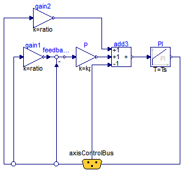
This controller has an inner PI-controller to control the motor speed, and an outer P-controller to control the motor position of one axis. The reference signals are with respect to the gear-output, and the gear ratio is used in the controller to determine the motor reference signals. All signals are communicated via the "axisControlBus".
| Type | Name | Default | Description |
|---|---|---|---|
| Real | kp | 10 | Gain of position controller |
| Real | ks | 1 | Gain of speed controller |
| Time | Ts | 0.01 | Time constant of integrator of speed controller [s] |
| Real | ratio | 1 | Gear ratio of gearbox |
| Type | Name | Description |
|---|---|---|
| AxisControlBus | axisControlBus |
model Controller "P-PI cascade controller for one axis" parameter Real kp=10 "Gain of position controller"; parameter Real ks=1 "Gain of speed controller"; parameter SI.Time Ts=0.01 "Time constant of integrator of speed controller"; parameter Real ratio=1 "Gear ratio of gearbox";Modelica.Blocks.Math.Gain gain1(k=ratio); Modelica.Blocks.Continuous.PI PI(k=ks, T=Ts); Modelica.Blocks.Math.Feedback feedback1; Modelica.Blocks.Math.Gain P(k=kp); Modelica.Blocks.Math.Add3 add3(k3=-1); Modelica.Blocks.Math.Gain gain2(k=ratio); Modelica.Mechanics.MultiBody.Examples.Systems.RobotR3.Components.AxisControlBus axisControlBus; equationconnect(gain1.y, feedback1.u1); connect(feedback1.y, P.u); connect(P.y, add3.u2); connect(gain2.y, add3.u1); connect(add3.y, PI.u); connect(gain2.u, axisControlBus.speed_ref); connect(gain1.u, axisControlBus.angle_ref); connect(feedback1.u2, axisControlBus.motorAngle); connect(add3.u3, axisControlBus.motorSpeed); connect(PI.y, axisControlBus.current_ref); end Controller;
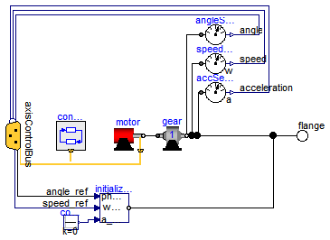
| Type | Name | Default | Description |
|---|---|---|---|
| Controller | |||
| Real | kp | 10 | Gain of position controller |
| Real | ks | 1 | Gain of speed controller |
| Time | Ts | 0.01 | Time constant of integrator of speed controller [s] |
| Motor | |||
| Real | k | 1.1616 | Gain of motor |
| Real | w | 4590 | Time constant of motor |
| Real | D | 0.6 | Damping constant of motor |
| Inertia | J | 0.0013 | Moment of inertia of motor [kg.m2] |
| Gear | |||
| Real | ratio | -105 | Gear ratio |
| Torque | Rv0 | 0.4 | Viscous friction torque at zero velocity in [Nm] [N.m] |
| Real | Rv1 | (0.13/160) | Viscous friction coefficient in [Nms/rad] [N.m.s/rad] |
| Real | peak | 1 | Maximum static friction torque is peak*Rv0 (peak >= 1) |
| Real | c | 43 | Spring constant [N.m/rad] |
| Real | cd | 0.005 | Damper constant [N.m.s/rad] |
| Type | Name | Description |
|---|---|---|
| Flange_b | flange | |
| AxisControlBus | axisControlBus |
model AxisType1 "Axis model of the r3 joints 1,2,3 " extends AxisType2(redeclare GearType1 gear(c=c, d=cd)); parameter Real c(unit="N.m/rad") = 43 "Spring constant"; parameter Real cd(unit="N.m.s/rad") = 0.005 "Damper constant"; end AxisType1;
The axis model consists of the controller, the motor including current controller and the gearbox including gear elasticity and bearing friction. The only difference to the axis model of joints 4,5,6 (= model axisType2) is that elasticity and damping in the gear boxes are not neglected.
The input signals of this component are the desired angle and desired angular velocity of the joint. The reference signals have to be "smooth" (position has to be differentiable at least 2 times). Otherwise, the gear elasticity leads to significant oscillations.
Default values of the parameters are given for the axis of joint 1.
| Type | Name | Default | Description |
|---|---|---|---|
| GearType2 | gear | redeclare GearType2 gear(Rv0... | |
| Controller | |||
| Real | kp | 10 | Gain of position controller |
| Real | ks | 1 | Gain of speed controller |
| Time | Ts | 0.01 | Time constant of integrator of speed controller [s] |
| Motor | |||
| Real | k | 1.1616 | Gain of motor |
| Real | w | 4590 | Time constant of motor |
| Real | D | 0.6 | Damping constant of motor |
| Inertia | J | 0.0013 | Moment of inertia of motor [kg.m2] |
| Gear | |||
| Real | ratio | -105 | Gear ratio |
| Torque | Rv0 | 0.4 | Viscous friction torque at zero velocity in [Nm] [N.m] |
| Real | Rv1 | (0.13/160) | Viscous friction coefficient in [Nms/rad] [N.m.s/rad] |
| Real | peak | 1 | Maximum static friction torque is peak*Rv0 (peak >= 1) |
| Type | Name | Description |
|---|---|---|
| Flange_b | flange | |
| AxisControlBus | axisControlBus |
model AxisType2 "Axis model of the r3 joints 4,5,6 "
parameter Real kp=10 "Gain of position controller";
parameter Real ks=1 "Gain of speed controller";
parameter SI.Time Ts=0.01 "Time constant of integrator of speed controller";
parameter Real k=1.1616 "Gain of motor";
parameter Real w=4590 "Time constant of motor";
parameter Real D=0.6 "Damping constant of motor";
parameter SI.Inertia J(min=0) = 0.0013 "Moment of inertia of motor";
parameter Real ratio=-105 "Gear ratio";
parameter SI.Torque Rv0=0.4
"Viscous friction torque at zero velocity in [Nm]";
parameter Real Rv1(unit="N.m.s/rad") = (0.13/160)
"Viscous friction coefficient in [Nms/rad]";
parameter Real peak=1
"Maximum static friction torque is peak*Rv0 (peak >= 1)";
Modelica.Mechanics.Rotational.Interfaces.Flange_b flange;
replaceable GearType2 gear(
Rv0=Rv0,
Rv1=Rv1,
peak=peak,
i=ratio);
Motor motor(
J=J,
k=k,
w=w,
D=D);
RobotR3.Components.Controller controller(
kp=kp,
ks=ks,
Ts=Ts,
ratio=ratio);
Modelica.Mechanics.MultiBody.Examples.Systems.RobotR3.Components.AxisControlBus
axisControlBus;
Modelica.Mechanics.Rotational.Sensors.AngleSensor angleSensor;
Modelica.Mechanics.Rotational.Sensors.SpeedSensor speedSensor;
Modelica.Mechanics.Rotational.Sensors.AccSensor accSensor;
Modelica.Mechanics.Rotational.Components.InitializeFlange
initializeFlange( stateSelect=StateSelect.prefer);
Blocks.Sources.Constant const(k=0);
equation
connect(gear.flange_b, flange);
connect(gear.flange_b, angleSensor.flange);
connect(gear.flange_b, speedSensor.flange);
connect(motor.flange_motor, gear.flange_a);
connect(gear.flange_b, accSensor.flange);
connect(controller.axisControlBus, axisControlBus);
connect(motor.axisControlBus, axisControlBus);
connect(angleSensor.phi, axisControlBus.angle);
connect(speedSensor.w, axisControlBus.speed);
connect(accSensor.a, axisControlBus.acceleration);
connect(axisControlBus.angle_ref, initializeFlange.phi_start);
connect(axisControlBus.speed_ref, initializeFlange.w_start);
connect(initializeFlange.flange, flange);
connect(const.y, initializeFlange.a_start);
end AxisType2;
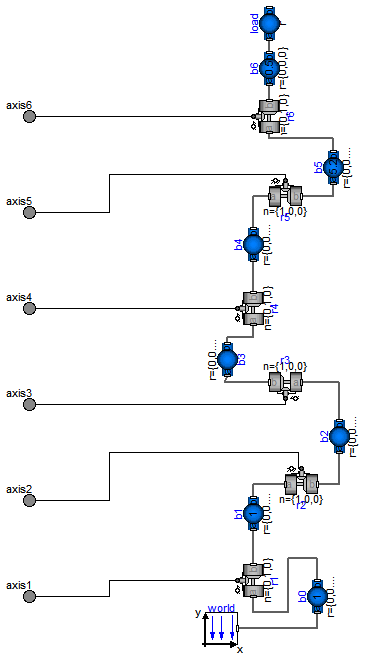
This model contains the mechanical components of the r3 robot (multibody system).
| Type | Name | Default | Description |
|---|---|---|---|
| Boolean | animation | true | = true, if animation shall be enabled |
| Mass | mLoad | 15 | Mass of load [kg] |
| Position | rLoad[3] | {0,0.25,0} | Distance from last flange to load mass> [m] |
| Acceleration | g | 9.81 | Gravity acceleration [m/s2] |
| Type | Name | Description |
|---|---|---|
| Flange_a | axis1 | |
| Flange_a | axis2 | |
| Flange_a | axis3 | |
| Flange_a | axis4 | |
| Flange_a | axis5 | |
| Flange_a | axis6 |
model MechanicalStructure
"Model of the mechanical part of the r3 robot (without animation)"
parameter Boolean animation=true "= true, if animation shall be enabled";
parameter SI.Mass mLoad(min=0)=15 "Mass of load";
parameter SI.Position rLoad[3]={0,0.25,0}
"Distance from last flange to load mass>";
parameter SI.Acceleration g=9.81 "Gravity acceleration";
SI.Angle q[6] "Joint angles";
SI.AngularVelocity qd[6] "Joint speeds";
SI.AngularAcceleration qdd[6] "Joint accelerations";
SI.Torque tau[6] "Joint driving torques";
//r0={0,0.351,0},
Modelica.Mechanics.Rotational.Interfaces.Flange_a axis1;
Modelica.Mechanics.Rotational.Interfaces.Flange_a axis2;
Modelica.Mechanics.Rotational.Interfaces.Flange_a axis3;
Modelica.Mechanics.Rotational.Interfaces.Flange_a axis4;
Modelica.Mechanics.Rotational.Interfaces.Flange_a axis5;
Modelica.Mechanics.Rotational.Interfaces.Flange_a axis6;
inner Modelica.Mechanics.MultiBody.World world(
g=(g)*Modelica.Math.Vectors.length(
({0,-1,0})),
n={0,-1,0},
animateWorld=false,
animateGravity=false,
enableAnimation=animation);
Modelica.Mechanics.MultiBody.Joints.Revolute r1(n={0,1,0},useAxisFlange=true,
animation=animation);
Modelica.Mechanics.MultiBody.Joints.Revolute r2(n={1,0,0},useAxisFlange=true,
animation=animation);
Modelica.Mechanics.MultiBody.Joints.Revolute r3(n={1,0,0},useAxisFlange=true,
animation=animation);
Modelica.Mechanics.MultiBody.Joints.Revolute r4(n={0,1,0},useAxisFlange=true,
animation=animation);
Modelica.Mechanics.MultiBody.Joints.Revolute r5(n={1,0,0},useAxisFlange=true,
animation=animation);
Modelica.Mechanics.MultiBody.Joints.Revolute r6(n={0,1,0},useAxisFlange=true,
animation=animation);
Modelica.Mechanics.MultiBody.Parts.BodyShape b0(
r={0,0.351,0},
shapeType="0",
r_shape={0,0,0},
lengthDirection={1,0,0},
widthDirection={0,1,0},
length=0.225,
width=0.3,
height=0.3,
color={0,0,255},
animation=animation,
animateSphere=false,
r_CM={0,0,0},
m=1);
Modelica.Mechanics.MultiBody.Parts.BodyShape b1(
r={0,0.324,0.3},
I_22=1.16,
shapeType="1",
lengthDirection={1,0,0},
widthDirection={0,1,0},
length=0.25,
width=0.15,
height=0.2,
animation=animation,
animateSphere=false,
color={255,0,0},
r_CM={0,0,0},
m=1);
Modelica.Mechanics.MultiBody.Parts.BodyShape b2(
r={0,0.65,0},
r_CM={0.172,0.205,0},
m=56.5,
I_11=2.58,
I_22=0.64,
I_33=2.73,
I_21=-0.46,
shapeType="2",
r_shape={0,0,0},
lengthDirection={1,0,0},
widthDirection={0,1,0},
length=0.5,
width=0.2,
height=0.15,
animation=animation,
animateSphere=false,
color={255,178,0});
Modelica.Mechanics.MultiBody.Parts.BodyShape b3(
r={0,0.414,-0.155},
r_CM={0.064,-0.034,0},
m=26.4,
I_11=0.279,
I_22=0.245,
I_33=0.413,
I_21=-0.070,
shapeType="3",
r_shape={0,0,0},
lengthDirection={1,0,0},
widthDirection={0,1,0},
length=0.15,
width=0.15,
height=0.15,
animation=animation,
animateSphere=false,
color={255,0,0});
Modelica.Mechanics.MultiBody.Parts.BodyShape b4(
r={0,0.186,0},
r_CM={0,0,0},
m=28.7,
I_11=1.67,
I_22=0.081,
I_33=1.67,
shapeType="4",
r_shape={0,0,0},
lengthDirection={1,0,0},
widthDirection={0,1,0},
length=0.73,
width=0.1,
height=0.1,
animation=animation,
animateSphere=false,
color={255,178,0});
Modelica.Mechanics.MultiBody.Parts.BodyShape b5(
r={0,0.125,0},
r_CM={0,0,0},
m=5.2,
I_11=1.25,
I_22=0.81,
I_33=1.53,
shapeType="5",
r_shape={0,0,0},
lengthDirection={1,0,0},
widthDirection={0,1,0},
length=0.225,
width=0.075,
height=0.1,
animation=animation,
animateSphere=false,
color={0,0,255});
Modelica.Mechanics.MultiBody.Parts.BodyShape b6(
r={0,0,0},
r_CM={0.05,0.05,0.05},
m=0.5,
shapeType="6",
r_shape={0,0,0},
lengthDirection={1,0,0},
widthDirection={0,1,0},
animation=animation,
animateSphere=false,
color={0,0,255});
Modelica.Mechanics.MultiBody.Parts.BodyShape load(
r_CM=rLoad,
m=mLoad,
r_shape={0,0,0},
widthDirection={1,0,0},
width=0.05,
height=0.05,
color={255,0,0},
lengthDirection=rLoad,
length=Modelica.Math.Vectors.length( rLoad),
animation=animation);
equation
connect(r6.frame_b, b6.frame_a);
q = {r1.phi,r2.phi,r3.phi,r4.phi,r5.phi,r6.phi};
qd = der(q);
qdd = der(qd);
tau = {r1.axis.tau,r2.axis.tau,r3.axis.tau,r4.axis.tau,r5.axis.tau,r6.
axis.tau};
connect(load.frame_a, b6.frame_b);
connect(world.frame_b, b0.frame_a);
connect(b0.frame_b, r1.frame_a);
connect(b1.frame_b, r2.frame_a);
connect(r1.frame_b, b1.frame_a);
connect(r2.frame_b, b2.frame_a);
connect(b2.frame_b, r3.frame_a);
connect(r2.axis, axis2);
connect(r1.axis, axis1);
connect(r3.frame_b, b3.frame_a);
connect(b3.frame_b, r4.frame_a);
connect(r3.axis, axis3);
connect(r4.axis, axis4);
connect(r4.frame_b, b4.frame_a);
connect(b4.frame_b, r5.frame_a);
connect(r5.axis, axis5);
connect(r5.frame_b, b5.frame_a);
connect(b5.frame_b, r6.frame_a);
connect(r6.axis, axis6);
end MechanicalStructure;